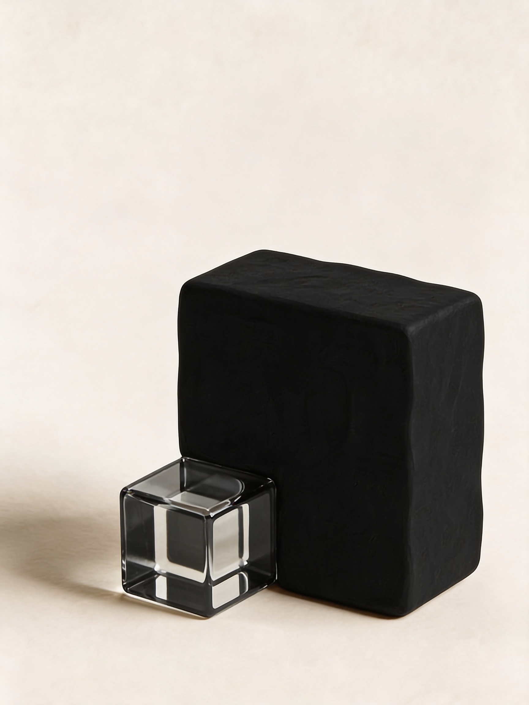
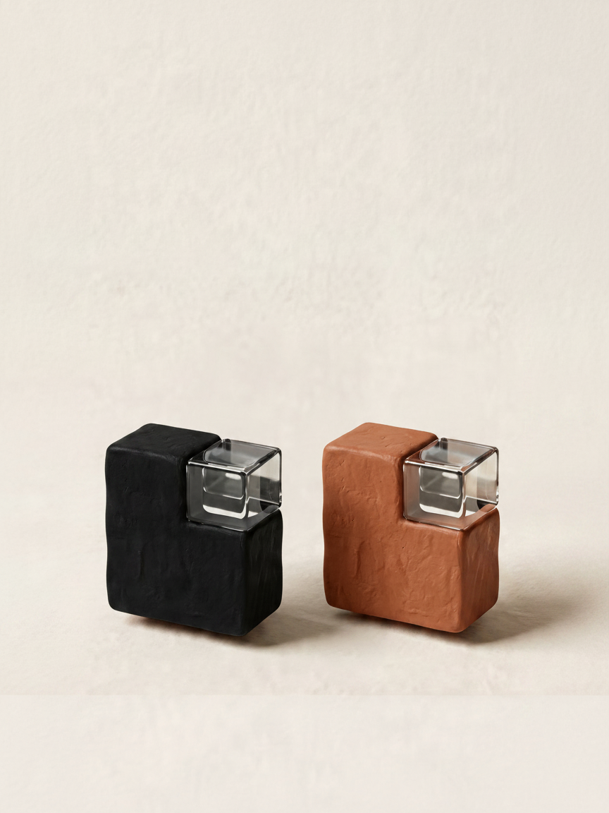
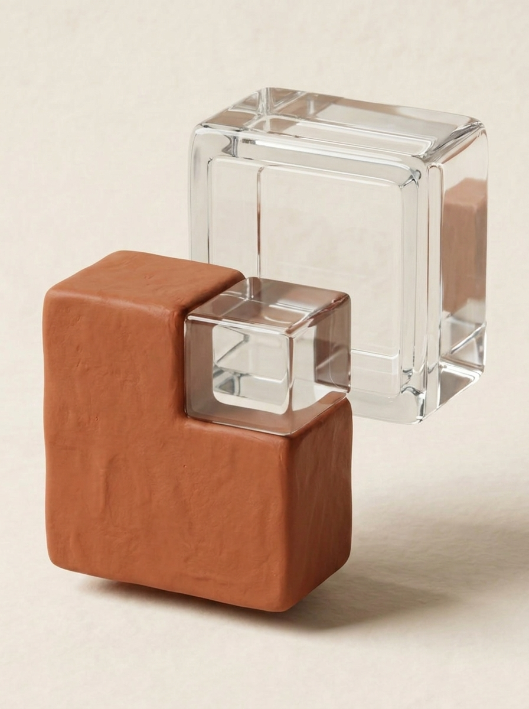

No portfolio. No clients. No proof of concept. Just a question that needed answering: what does it actually take to help someone say the thing they've been trying to say?
Started
May 2026
Status
Ongoing
Services
Positioning · Brand · Web
The studio
Some things are hard to say not because they're unclear, but because no one has ever given them the right form.
Main Stage Studio works with people who have something real to say that hasn't yet found its form. Founders. Established businesses that have lost calibration. Creatives at any stage. The pattern is always the same: the gap between what something is and how it currently shows up.
The name says it. The client is always centre stage. The studio is the infrastructure that makes it possible: the thinking, the positioning, the brand, the platform, built to carry their vision, not ours.
01 — The Brief
Every MSS engagement starts before the tools, the design, or the brief. It starts with a question: what does this person actually need to say, and what has been standing between them and saying it?
This was the hardest version of that conversation. Because the client was us.
"Build a studio that helps people find the form for what they're trying to say. Positioning, brand identity, digital presence. End-to-end."
"Client: anyone with the gap between what something is and how it shows up. Don't narrow it prematurely. Figure out the pattern."
"Challenge: no portfolio yet. Build MSS as its own first case study. The process has to prove itself on itself."
The brief raised the only question that mattered: what does success actually look like? Not what gets built. What changes for the person it's built for. That question is where every engagement at MSS begins.
02 — Discovery
Who exactly is the client?
Creative founders in events, live entertainment, and broadcasting.
Creative founders. Any sector.
Both of those answers started from the studio's existing frame rather than from the actual problem. The real question was never which industry, or even which life stage. It was: what is the situation? What does it look like when someone has the thing but can't yet make it land?
People with something real to say that hasn't yet found its form. Founders, established businesses that have lost calibration, creatives at any stage. The common thread is the gap between what something is and how it currently shows up.
What makes MSS different?
Product thinking and AI tools.
That's the method. Methods don't differentiate. What differentiates is what the method is in service of. The question to answer before anything gets made is: what does the client need to walk away with? Not what deliverables. What clarity. What changed understanding of their own work. Starting there, and working backwards, is the discipline. The AI accelerates the execution. The judgment about what to do with it hasn't changed hands.
Someone who starts with what success looks like before asking what anything looks like. Who treats AI as a thinking partner, not a shortcut. Structured enough to deliver. Creative enough to earn the trust.
What's the proposition?
We make it real.
Built for founders.
Brand meets strategy.
You know what you want. We know how to build it.
The fourth version was closer. But it still assumed the client knew what they wanted. The real situation is more specific: the vision already exists. The thing standing between it and the world isn't capability or clarity. It's the form it needs to take, and the confidence that it deserves to exist at all.
Your vision doesn't need
permission. It needs form.
What is the client actually waiting for?
This question didn't appear in the original brief. It surfaced through the work. Because the pattern across every engagement, every type of client, every sector, was the same: the vision was there. It had always been there. What was missing wasn't the idea. It was the moment when someone else confirmed it was worth saying.
The studio exists to make that moment unnecessary. Not to grant permission. To make the permission question irrelevant. The vision already deserves to exist. The work is just building what carries it.
The proposition
You know what you want. We know how to build it.
"Your vision doesn't
need permission."
"It needs form."
The earlier line assumed the client already knew what they wanted. This one starts somewhere more honest: the vision already exists. It always did. What's missing isn't the idea or the capability. It's the form, and the certainty that it deserves to exist at all. The studio doesn't grant that certainty. It makes the question unnecessary.
03 — The Mark
Near-black — The scaffolding
What the studio brings. The thinking infrastructure: outcome-first, clear about what success looks like before anything gets made. It leads, because without it the vision has nowhere to go.
Terracotta — The vision
What the client brings. The idea, the instinct, the creative energy that drives the whole engagement. It's already there before we arrive. Our job is never to replace it, only to give it form.
Parchment — The stage
Where the two meet. Not a compromise between structure and vision, but the space where they stop being separate things. The place where the work becomes possible. The stage the client steps onto.
How the thinking evolved

The first idea was transparency. Structure made visible through glass. The concept was right. The form wasn't resolved yet.

The two elements understood separately. Each with its own relationship to structure and space, before deciding how they should meet.

The resolved idea. Terracotta and glass. Raw vision and precise structure, meeting at an intersection that belongs to neither. That's the stage.
04 — Brand Expression
Motion identity
Structure assembling from nothing. Individual elements falling, finding their place, filling a space that didn't exist before they arrived.
That's what the studio does for a client. The vision is already there. The motion shows what happens when the scaffolding arrives to hold it up.
Colour palette
Parchment
#F5EFE5
Blush
#E8C9AE
Terracotta
#BF6B47
Ember
#8C4A2F
Near-black
#1C1712
Warm, editorial, grounded. Parchment as the surface everything lives on. Terracotta as the moment of punctuation. Near-black carrying the weight of the type. Nothing cool, nothing generic, nothing that could belong to anyone else.
Typography
Display — Cormorant Garamond 300/400
You know what you want.
Body — Plus Jakarta Sans 300
The brief is rarely the real brief. We stay in the question long enough to find what's actually there.
Label — Plus Jakarta Sans 500
Discovery · Brand Expression · Design System · Web Presence
Two voices in relationship. Cormorant Garamond for the moments that need to carry weight. Plus Jakarta Sans for everything that needs to move cleanly and be understood immediately. The pairing says the same thing the mark says: structure and warmth, working together.
Tone of voice
What we almost wrote
What we actually wrote
Product thinking applied to creative work.
We figure out what success looks like before we design a single thing.
AI-assisted delivery, faster without it showing.
The tools have changed what's possible. The judgment about what to do with them hasn't changed hands.
End-to-end process.
Each stage informs the next. Nothing gets handed over and abandoned.
Discovery and positioning.
The brief is rarely the real brief. We stay in the question long enough to find what's actually there.
The voice in context
First impression
Some things are hard to say not because they're unclear, but because no one has ever given them the right form. Main Stage Studio works with people who have a vision worth expressing. We listen until we understand it properly. Then we build everything around it, the brand, the language, the digital presence, so that when people encounter your work, they hear exactly what you meant.
Discovery framing
Before we talk about what anything looks like, I want to understand what you're actually trying to say. Most briefs are a starting point. The real story is usually underneath it, and it takes a proper conversation to find it. So let's start there. What made you build this?
What this made possible
The studio built itself the same way it builds for clients. Outcome defined before anything was designed. Every decision traced back to the same question: what does this need to do?
What emerged wasn't just a positioning. It was a clearer understanding of the problem. The niche narrowed, then widened. The proposition evolved. The work across the first engagements, a medical practice, a combat sports brand, the studio itself, confirmed that the gap between what something is and how it shows up isn't a creative industry problem. It's a human one.
The studio is the proof of concept. If you have something real that hasn't yet found its form, that's where we start.
Start a project